September 7, 2013
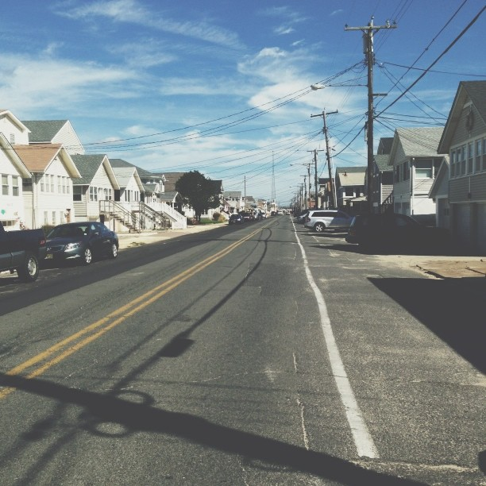July 2, 2013

June 20, 2013
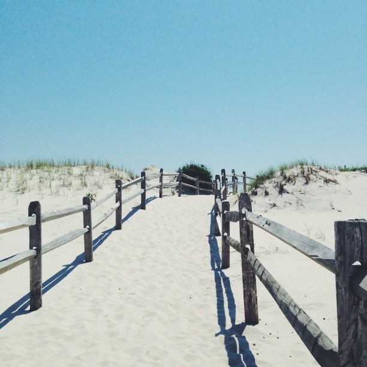June 9, 2013
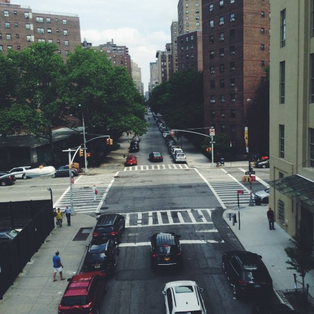June 9, 2013
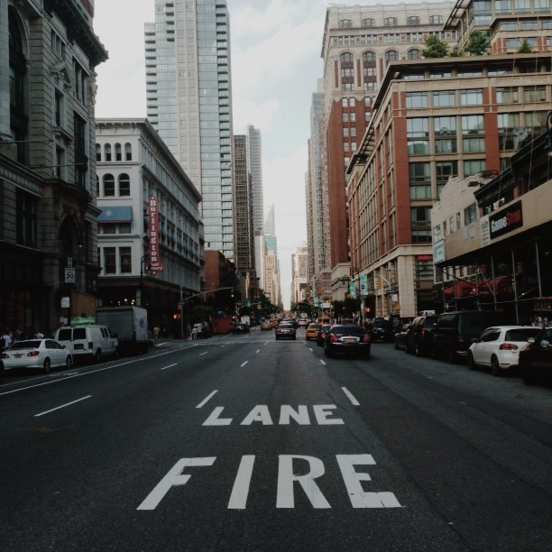November 12, 2012
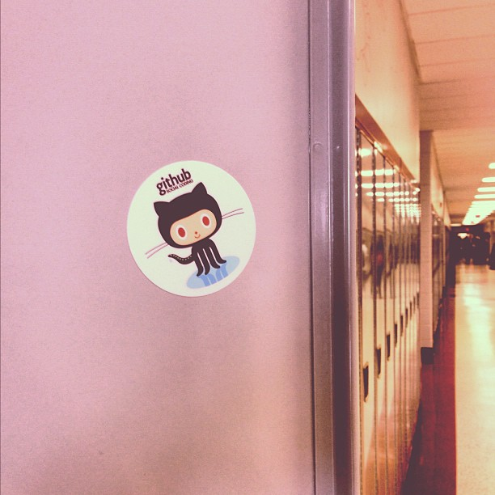November 3, 2012
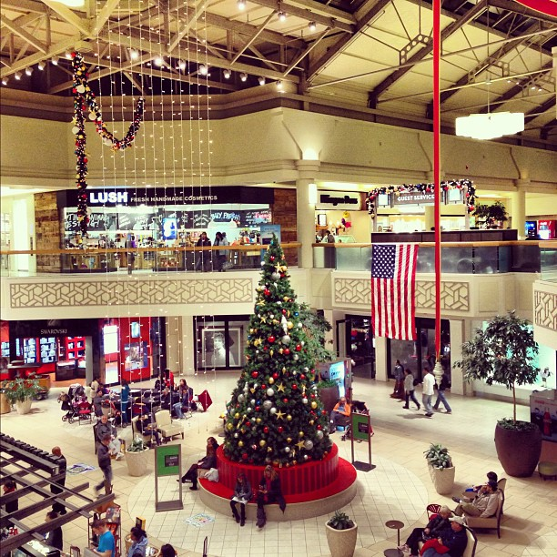October 16, 2012
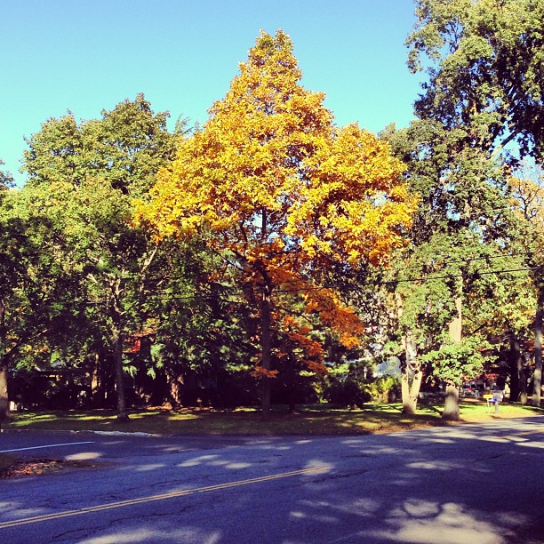August 22, 2012
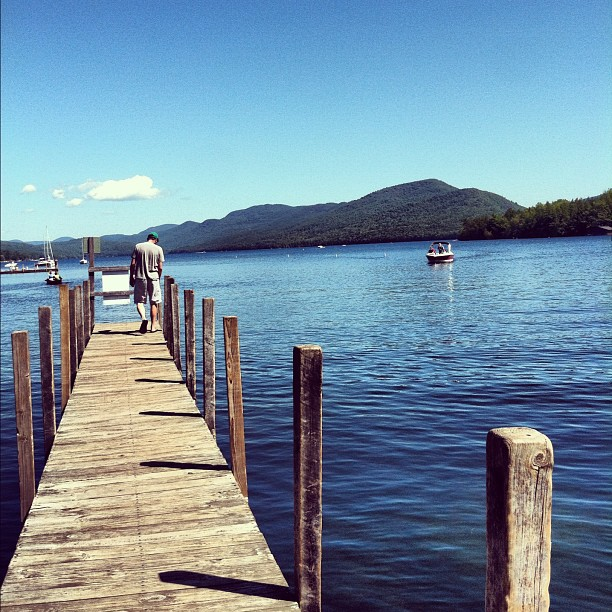July 22, 2012
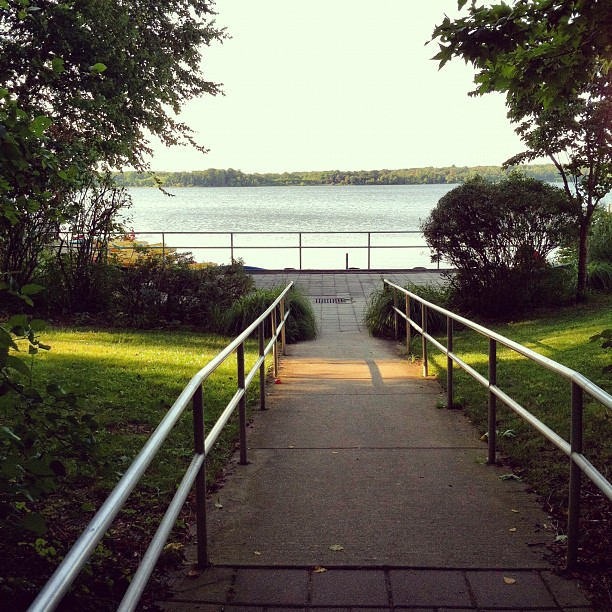July 2, 2012
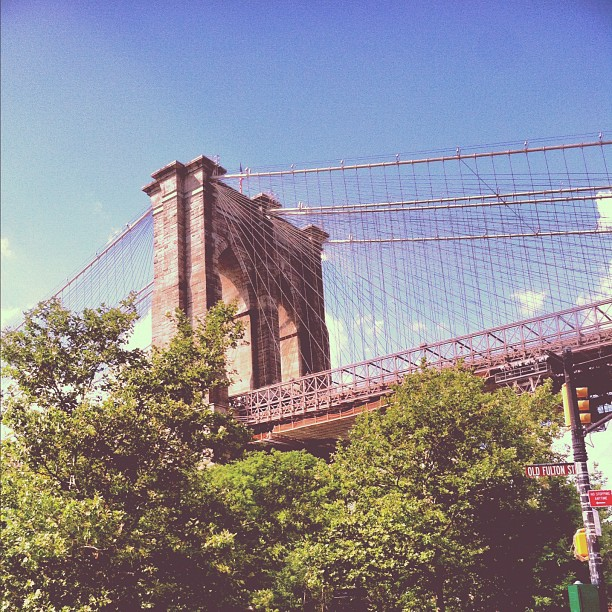June 16, 2012
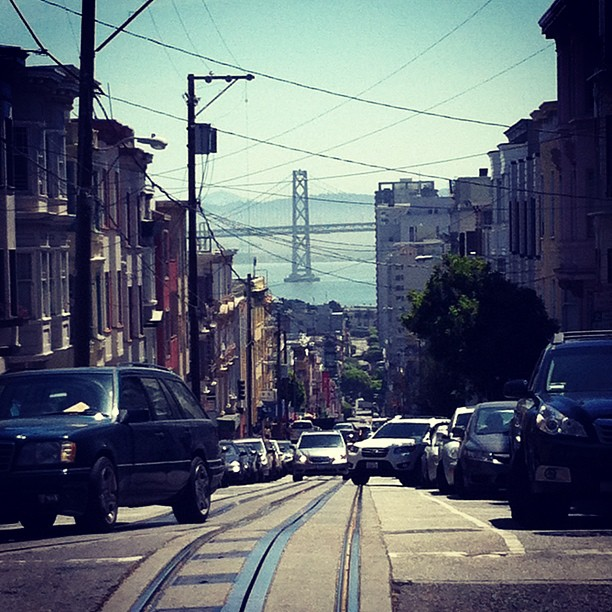June 11, 2012
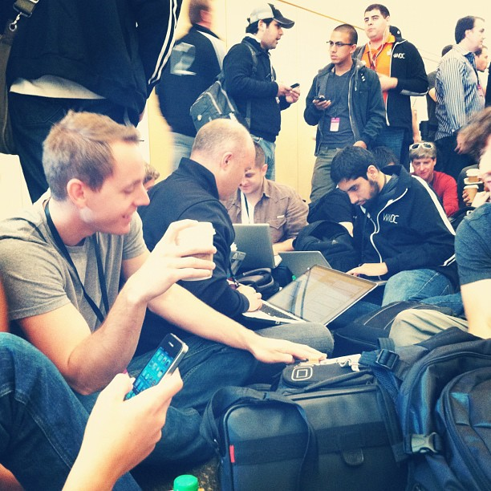June 11, 2012
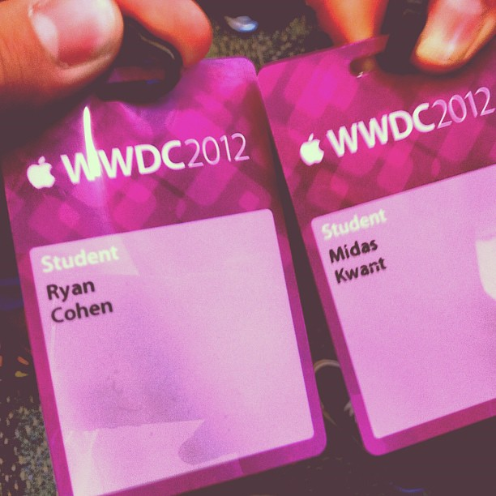June 11, 2012
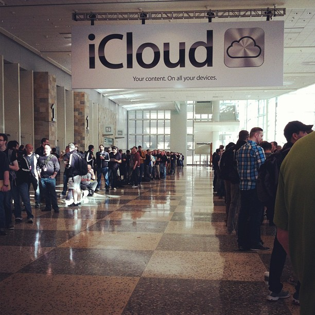February 26, 2011
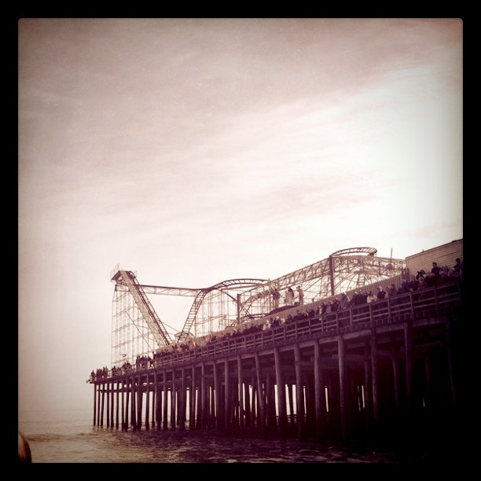January 19, 2011